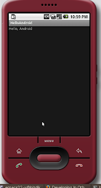
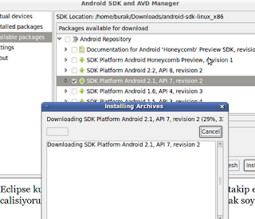

Android Gelistirme Ortami
Google'in cep telefonlari icin one surdugu Android etrafinda bayagi hareketlenme var. G1 telefonu bir suredir piyasada. Simdi de HTC Hero adli bir telefon cikti, telefon hakkindaki yorumlar iyi. Android gelistirme ortami kurmaya gelelim: Su adresi ziyaret edin.
http://developer.android.com/sdk/index.html
Isletim sisteminiz icin olani indirin (bizim icin Linux). Paketi acin, ve [DIZIN]/tools dizinine girin. Burada "android" adindaki programi calistirin. Available Packages secenegine bakin, listelenen sitenin sol ok tusuna basinca normalde indirme baslamali. Fakat bu site bizde https uzerinden baglanti problemi verdi, o yuzden Settings altinda "Force https .. " diye baslayan secenegi sectik, "Save and Apply" dugmesine basip programi kapatip tekrar baslattik. Ikinci sefer liste indirildi. Listede ne varsa secin ve "install" deyin. Is bittikten sonra UI programindan cikin ve tools dizini altinda komut satirindanandroid list targetskomutunu isletin.
Onceden liste bos gelecekti, simdi install ettiginiz seyleri goruyor olmaniz lazim. Artik Hello World ornegini yazabiliriz. Alttaki sayfaya bakalim:http://developer.android.com/guide/tutorials/hello-world.htmlBir "cep telefon" hedefi yaratalim:android create avd --target 2 --name my_avdEger Android grafik arayuzu uzerinden target yaratmak istiyorsak, o zaman tools/android komutu ile programi baslatiriz, "Available packages" seceneginden bir SDK seceriz ve kurariz. Sonra Settings altinda "Force https .." diye giden secenegi seceriz, ve "Virtual Devices" bolumune gideriz. Oradan artik "New" ile yeni bir avd ekleyebiliriz. Burada kullandigimiz isim ile "emulator -avd myavd" komutu isleyecektir.
Eclipse kullanicilari ustteki sayfadaki gerekli olanlari takip edebilir. Biz build.xml bazli calisiyoruz, o durumda iskelet dizin, build.xml yaratmak soyle:
android create project --package com.android.helloandroid --activity HelloAndroid --target 2 --path [GELISTIRME DIZINI]
Diger IDE'ler hakkinda daha fazla detay
http://developer.android.com/guide/developing/other-ide.html
Uretilen HelloWorld.java koduna gidip sunlari yazabilirsiniz:
package com.android.helloandroid;
import android.app.Activity;
import android.os.Bundle;
import android.widget.TextView;
public class HelloAndroid extends Activity {
/** Called when the activity is first created.
*/@Overridepublic void onCreate(Bundle savedInstanceState) {
super.onCreate(savedInstanceState);
TextView tv = new TextView(this);
tv.setText("Hello, Android");
setContentView(tv);}
}
Simdi emulatoru baslatialm:
emulator -avd my_avd
Emulator arka planda isliyor iken, gelistirme dizinine gidipant
installile uygulamayi derleyip emulasyon aletine install edelim. Eger
kod degistirilirse, ant reinstall ile tekrar kod gonderilebilir. Kod
isleyisi hakkinda problemleri gormek icin tools altinda "adb logcat"
faydali. Bu kadar. Simdi emulator'den menuyu acip HelloAndroid
uygulamasinan gidin ve uzerine tiklayin. Ustteki resim gibi bir cikti
gelmesi lazim.

